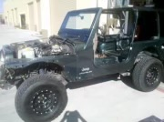
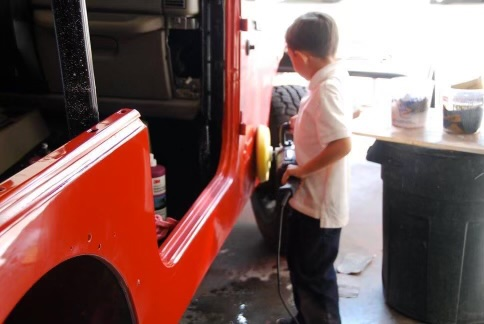
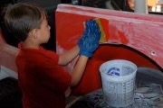
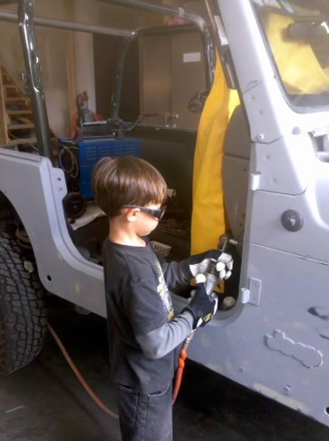
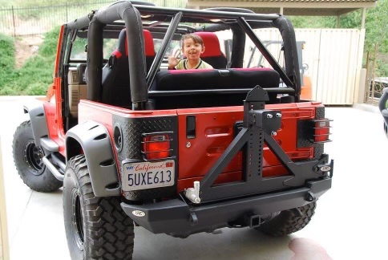

Overview
This rebuild documents an early encounter with a worn mechanical platform and the discipline it required to return the vehicle to reliable function. It established habits around part tracking, sequenced work, and practical troubleshooting that carry into later projects.
Process
Work moved through inspection, disassembly, cleaning, parts sorting, repair, fitment checks, and staged reassembly. Nothing was assumed to be correct without testing before moving to the next step.
Gallery





Outcome
A fully functional rebuild and a strong mechanical foundation. The project shaped how I approach every repair: sequence the work, document each step, and verify before moving forward.